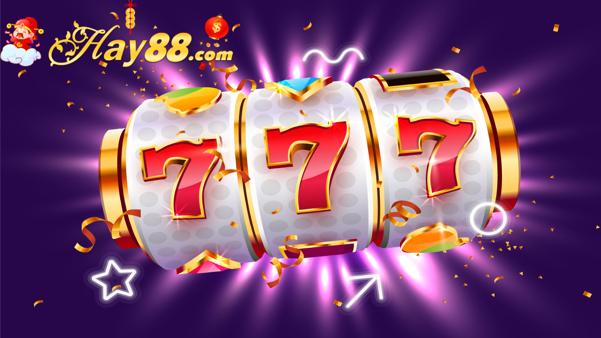

Khi tham gia nổ hũ, cược thủ có thể thắng về số tiền thưởng cực kỳ lớn cho mình tại nhà cái. Cách chơi vẫn được áp dụng thông qua quay thưởng ngẫu nhiên kết quả nhờ hệ thống PNG. Tuy nhiên, anh em có cơ hội thắng đậm nhiều giải thưởng hơn khi chơi tại nhà cái do các chức năng hỗ trợ.

Phải nói rằng game nổ hũ là game mà người chơi không cần phải quá phức tạp hay để tâm đến việc học cách chơi quá nhiều khi đến với nhà cái này. Bởi lẽ, game này dường như không có cách chơi, cược thủ cũng không cần tư duy quá nhiều trong quá trình tham gia và chơi tại đây.
Các anh em cược thủ cần phải đặt cược bằng bỏ tiền ra mua vé cược cho một vòng quay nổ hũ tại đây. Sau khi có vé cược, anh cần đọc qua thông tin tính giải cũng như những biểu tượng có thể mang cho anh em thắng lợi lớn.
Sau đó, việc tiếp theo bet thủ cần làm đó chính là tiến hành vòng quay nổ hũ ngay để có thể rinh tiền. Bạn ấn vào nút “quay” trên màn hình để có thể tiến hành thao tác quay hũ thưởng và ấn vào “dừng” khi biểu tượng mình mong muốn xuất hiện. Giải thưởng của bạn được tính bằng số biểu tượng, cách sắp xếp của chúng trên màn hình.
Ngoài ra, nhằm hỗ trợ cược thủ có thể tìm kiếm nhiều chiến thắng hơn khi chơi tại Game nổ hũ Hay88 , nhà cái cho phép người chơi sử dụng các chế độ trợ giúp trong quá trình quay. Chẳng hạn như điều chỉnh tốc độ quay, xu thế của biểu tượng xuất hiện trên màn hình là ngang hay dọc, chức năng khoá, dừng vòng quay khi thấy biểu tượng mình muốn.
Nhìn chung, với cách chơi đơn giản cùng với số tiền thưởng dễ kiếm, nắm vững một vài kinh nghiệm chia sẻ bởi cao thủ, chiến thắng thuộc về anh em là 100% không cần bàn cãi.